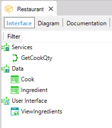

The purpose of this Tab is to display the set of public objects that make up the Module Interface. Objects are public and belong to the Interface when the Object Visibility property is set to Public.
To view this tab, open the module by selecting it in the KB Explorer and pressing F12 or right-click on the module and select Open.
The Interface is divided into three sections:

HowTo: Opening a Module Object
Which objects can be defined in a module?